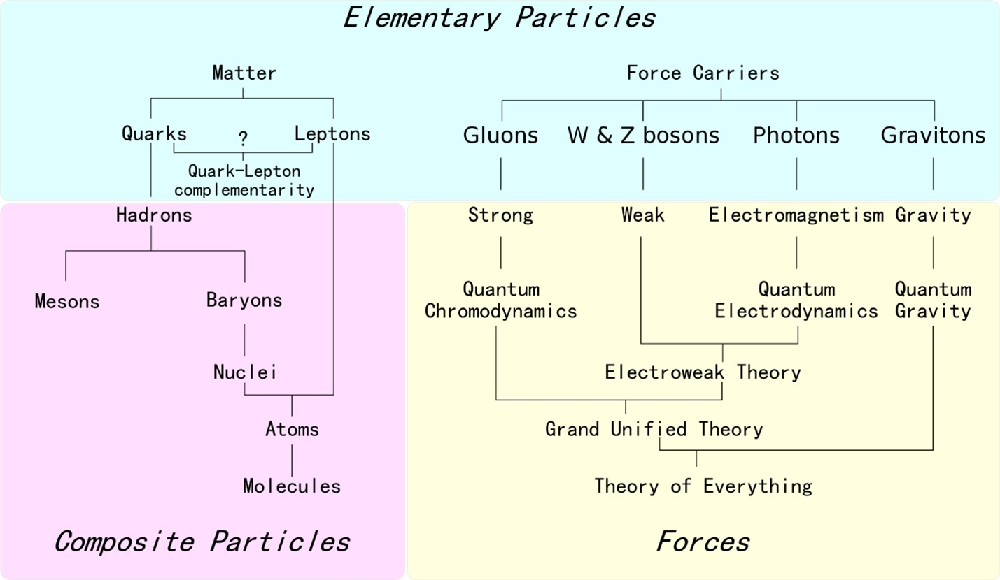
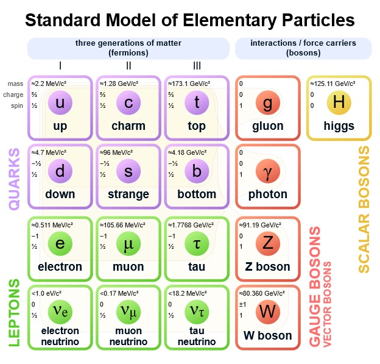
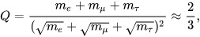
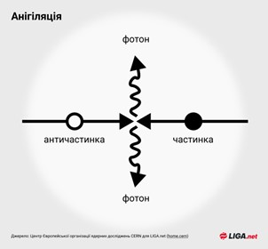

Matter and Antimatter
Definition of matter and antimatter
Matter (англ. matter, substance) is the foundation of existence, manifesting in the diversity and complexity of objects, processes, phenomena in the micro-, macro-, and megaverse. It exists in motion, development, and transformations.
Traditionally, in the physical picture of the universe, two fundamental types of matter are distinguished — substance and physical fields. However, such a division is conditional, as within the framework of quantum field theory, any particle is described by quantized physical fields. Quantization of fields gives them characteristics of corpuscularity. The difference between, for example, electrons, traditionally considered particles of substance, and the electromagnetic field is that quanta of the electromagnetic field, photons, are bosons, while electrons are fermions. Another feature by which matter can be divided into substance and physical fields is the presence or absence of mass. If such a classification is applied, then W and Z bosons should be attributed to substance, while neutrinos belong to fields. Overall, such a division is not essential for physicists.
In recent years, to explain the acceleration of the universe's expansion, as indicated by astronomical observations, there has been a need to hypothesize the existence of a new type of matter, which has been named dark energy. The nature of dark energy remains unclear.
Main types of matter:
-
Substance
- Hadronic matter - composed of hadrons.
- Baryonic matter - matter consisting of baryons.
- Matter in the classical sense - primarily composed of fermions. This form of matter dominates in the Solar System and in nearby stellar systems.
- Antimatter - composed of antiparticles.
- Neutron matter - primarily composed of neutrons and devoid of atomic structure. The main component of neutron stars, with a density significantly greater than that of ordinary matter but less than that of quark-gluon plasma.
- Other forms of matter having an atom-like structure (e.g., matter composed of mesoatoms with muons).
- Quark-gluon plasma - an ultra-dense form of matter that existed in the early stages of the universe's evolution before quarks combined into classical elementary particles (before confinement).
- Hypothetical pre-quark condensed material formations, whose components are strings and other objects postulated by grand unification theories (see string theory, superstring theory). Basic forms of matter that presumably existed in the early stages of the universe's evolution. String-like objects in modern physical theory claim to be the most fundamental material formations, to which all elementary particles, i.e., all known forms of matter, can ultimately be reduced. At this level of matter analysis, the distinction between "substance" and field forms of matter becomes conditional, as the difference between material and field forms of matter at this level is blurred.
-
Field (in the classical sense):
- Electromagnetic field.
- Gravitational field.
- Quantum fields of various natures. According to modern concepts, the quantum field is a universal form of matter, to which both substances and classical fields can be reduced. There is a fuzzy division into substance fields (leptonic and quark fields of fermionic nature) and interaction fields (gluon strong, intermediate boson weak, and photon electromagnetic fields of bosonic nature, including the currently hypothetical graviton field). Of particular note is the Higgs field, which is difficult to categorize unequivocally into any of these categories.
- Material objects of unclear physical nature:
- Dark matter.
- Dark energy.
So what is matter composed of?
Each atom consists of quarks and gluons.
Additionally, most of the quarks listed below were discovered and existed only in colliders.
The Standard Model of elementary particles predicts six types of quarks: up (u), down (d), charm (c), strange (s), top (t), and bottom (b). Combinations of these quarks form a rich spectrum of stable and unstable particles observed in high-energy experiments.
Main characteristics of quarks:
- Electric Charge: Quarks possess electric charge, but they cannot exist individually, always being part of multicolored combinations, known as mesons and baryons.
- Mass: Quarks have very small mass. For example, compared to an electron, the mass of a quark is larger, but compared to an atomic nucleus, it is very small.
- Color Charge: Quarks carry a color charge - an intrinsic property responsible for strong interaction, which contributes to the formation of nuclei. Quarks can have "red", "green", or "blue" color, and they combine to form colorless combinations.
Spin: Quarks have a spin of 1/2, indicating their fermionic nature (particles with half-integer spin), and they are subject to the principles of quantum mechanics.
Gluon is an electrically neutral elementary particle that plays the same role in strong nuclear interaction as the photon in electromagnetism. Gluons "glue" quarks inside nucleons. The existence of gluons is only indirectly detected. According to the hypothesis of quark and gluon confinement, the energy required to separate nucleons increases with distance, making the extraction of a pure quark require infinitely large energy. Gluons participate in strong interaction rather than merely mediating it.
Gluons have a spin of 1 and no mass, so they have two spin polarizations. However, besides spin polarization, they have a color charge, resulting in a much larger total number of polarizations. Although gluons have no mass, nonlinear effects (the fact that interaction carriers carry a color charge themselves) prevent gluons, like quarks, from escaping atomic nuclei. Hypothetically, at relatively large distances (of the order of the nucleon size), gluons form extended configurations - gluon strings, whose tension depends on their length. Thus, the potential energy of strong interaction increases linearly with distance ∼ r.
Furthermore, matter consists of leptons and bosons.
Lepton is an elementary particle, a fermion that does not participate in strong interaction. The name "lepton" was proposed by Leon Rosenfeld in 1948 and reflected the fact that all known leptons at that time were significantly lighter than heavy particles belonging to the class of baryons (Gr. βαρύς - heavy). Currently, the etymology of the term is not entirely consistent with the actual situation, as the tau lepton discovered in 1977 is approximately twice as heavy as the lightest baryons (proton and neutron).
There are three generations of leptons:
- First generation: electron, electron neutrino
- Second generation: muon, muon neutrino
- Third generation: tau lepton, tau neutrino (plus corresponding antiparticles)
| Particle / Antiparticle Name | Symbol | Charge Q (e) | Spin J | Le | Lμ | Lτ | Mass (MeV/c²) | Lifetime (s) |
|---|---|---|---|---|---|---|---|---|
| Electron | e− | −1 | 1⁄2 | +1 | 0 | 0 | 0.510998910(±13) | Stable |
| Positron | e− | +1 | 1⁄2 | -1 | 0 | 0 | 0.510998910(±13) | Stable |
| Muon | μ− | −1 | 1⁄2 | 0 | +1 | 0 | 105.6583668(±38) | 2.197019×10−6(±21) |
| Antimuon | μ+ | +1 | 1⁄2 | 0 | -1 | 0 | 105.6583668(±38) | 2.197019×10−6(±21) |
| Tau lepton | τ− | -1 | 1⁄2 | 0 | 0 | +1 | 1776.84 (±.17) | 2.906×10−13(±.010) |
| Anti-tau | τ+ | +1 | 1⁄2 | 0 | 0 | -1 | 1776.84 (±.17) | 2.906×10−13(±.010) |
| Electron neutrino | ve | 0 | 1⁄2 | +1 | 0 | 0 | < 0.0000022 | Unknown (very large) |
| Electron antineutrino | -ve | 0 | 1⁄2 | -1 | 0 | 0 | < 0.0000022 | Unknown (very large) |
| Muon neutrino | vμ | 0 | 1⁄2 | 0 | +1 | 0 | < 0.17 | Unknown (very large) |
| Muon antineutrino | -vμ | 0 | 1⁄2 | 0 | -1 | 0 | < 0.17 | Unknown (very large) |
| Tau neutrino | Vt | 0 | 1⁄2 | 0 | 0 | +1 | < 15.5 | Unknown (very large) |
| Tau antineutrino | -Vt | 0 | 1⁄2 | 0 | 0 | -1 | < 15.5 | Unknown (very large) |
The relationship between the masses of charged leptons is described by the Koide formula.
The Koide formula is an empirical relationship between the masses of charged leptons, discovered by Yoshio Koide in 1981. As of 2015, there is no rational explanation for this relationship. It may be a random coincidence, although some physicists consider this unlikely.
The Koide formula is expressed as:
Where:
me = 0.510998910(13) MeV/c2,
mμ = 105.658367(4) MeV/c2,
mτ = 1776.84(17) MeV/c2,
More details about bosons:
A boson (named after the physicist Satyendra Nath Bose) is a particle or quasi-particle with integer spin (0, 1, 2, ... in units of the Planck constant). It is one of the two broad groups into which all known particles are divided, both elementary and composite (the other group being particles with half-integer spin, fermions). The wave function of bosons is symmetric under the exchange of particles, so they obey Bose-Einstein statistics: an unlimited number of identical particles can occupy the same quantum state.
Bosons include: photons, W and Z bosons, mesons and antimetons, neutral atoms of hydrogen or helium-4, phonons, and so on.
Unlike fermions, elementary bosons do not have antiparticles. Therefore, the number of bosons is not conserved, whereas the baryon and lepton numbers remain unchanged in reactions of elementary particles.
In many cases, the oscillation of various fields in a solid can correspond to particles (according to the principle of wave-particle duality). Such fields do not exist separately from the body in which they propagate, so the corresponding particles are called quasiparticles. Many quasiparticles, such as phonons and magnons, are bosons. Also, important bosonic quasiparticles include the bound state of electrons called Cooper pairs - two electrons bound together by interaction with phonons (these particles play a crucial role in the mechanism of superconductivity) or excitons - bound states of an electron and a hole.
Antimatter is any substance composed of antiparticles - the antipartners of particles that make up ordinary matter.
Every particle has its antiparticle: the positron for the electron, the antiproton for the proton, and so on. Some particles are their own antiparticles, such as the photon; these particles are called truly neutral. Antiparticles have the same mass as particles but opposite charge, lepton, and baryon numbers. When a particle collides with its antiparticle, they annihilate, transforming into photons, neutrinos, or other less massive particles. In the process of annihilation, the mass of the particle-antiparticle pair is entirely (in the case of transformation into photons) or largely converted into energy according to the formula E=mc2.
Antiparticles interact with each other just like particles do; for example, antiprotons and positrons can form antihydrogen atoms, and together with antineutrons, they can form heavier antiatoms.
The first antiparticle (the positron) was discovered by Carl David Anderson in 1932, and the first antiatom (antihydrogen) was created in 1995. Currently, the most complex synthesized antiatom is antihelium.
According to modern estimates, antimatter is practically absent in the Universe. The reasons for this lie in the asymmetry between matter and antimatter in reactions between particles shortly after the Big Bang. The specific mechanism of this asymmetry is one of the unresolved problems of modern physics, but its efficiency is known: for every billion particle-antiparticle pairs, one additional particle was formed. The period when these reactions occurred is called baryogenesis, and it lasted for about 10-31 seconds after the Big Bang.
In the 1950s, physicists were already confident in the existence of antipartners and heavier particles, but the typical energies of cosmic rays were insufficient for their formation. Therefore, in 1954, the Bevatron was built in Berkeley - an elementary particle accelerator capable of accelerating particles to energies of 6 GeV. With its help, the antiproton was discovered in 1955, and the antineutron was discovered in 1956.
In 1965, the first antinucleus was synthesized - scientists at CERN obtained antideuterium. In the early 1970s, antihelium-3 and antitritium nuclei were obtained at the Institute of High Energy Physics in Protvino using accelerators. The heaviest of the synthesized antinuclei to date - antihelium-4 - was observed in 2011 by the STAR collaboration.
Creating the simplest antiatoms (antihydrogen) requires antiprotons and antineutrons to be close together for a sufficiently long time by the standards of particle physics. Considering that antiparticles produced during high-energy collisions typically move at relativistic speeds, achieving this is quite challenging. The first antihydrogen was synthesized at CERN in 1995 during the PS210 experiment by a team led by Walter Oelert.
The formation of antiparticles usually occurs through the process inverse to annihilation - the process of pair production. This requires energy greater than the combined mass of the particle and antiparticle.
The simplest of antiparticles - positrons, the antiparticles of electrons - are relatively frequently produced as a result of various nuclear reactions. The energy required for this is relatively small considering the lightness of leptons - slightly greater than 1 MeV.
Antiparticles of baryons require energy of over 1 GeV for formation.
The first antihydrogen atom was observed in 1995 in the SP20 experiment at the LEAR accelerator at CERN, but at that time, it only existed in the accelerator for a very short time (about 40 ns) and moved at a speed close to the speed of light. Only 9 antihydrogen atoms were registered. Such antimatter was not suitable for studying properties, so scientists began to construct "traps" where it could be accumulated and held.
To achieve this, antiprotons need to be "cooled" to reduce their energy and velocity. CERN is the only center in the world equipped specifically for creating and studying low-energy antiprotons.
Antiprotons in the ALPHA experiment are produced under vacuum conditions; however, this does not solve the annihilation problem as they remain surrounded by ordinary matter. Therefore, to extend the lifetime of antimatter, scientists have "constructed" a trap with a very strong and complex configuration of magnetic fields. At very low temperatures in such a trap, antihydrogen atoms are accumulated, obtained by combining antiprotons and positrons moving at approximately equal speeds.
The CERN committee created an antiproton decelerator (AD) to support the development of low-energy antihydrogen for testing fundamental symmetries. The AD will produce antihydrogen bunches at CERN. CERN expects their installations to be capable of producing 10 million antiprotons per minute.
As a result, the lifetime of antihydrogen atoms has been increased by many orders of magnitude: in the ALPHA experiment, an antimatter atom exists for a fraction of a second, which is sufficient for studying its properties.
The released beam of antiprotons from the AD is further slowed down either by passing through thin foils (experiments ALPHA, ATRAP) or in the Radio Frequency Quadrupole Decelerator (RFQD) for the ASACUSA experiment, to 15 keV/c. These experiments, like the completed ATHENA, aim to obtain, trap, and study antimatter atoms. For more efficient deceleration, it is proposed to build another ring, ELENA (Extra Low ENergy Antiproton ring), to decelerate the released beam of antiprotons from the AD from 5.3 MeV to 100 keV kinetic energy.
According to the results of a year and a half of research at CERN, published in 2022, the mass of matter and antimatter does not differ. This means that matter and antimatter react to gravity in the same way. Figuratively speaking, samples of both will fall down without any difference. To test this assumption, a team of CERN researchers placed antiprotons and negatively charged hydrogen ions in an electromagnetic device called the Penning trap. When they enter, the particles move along a cyclical trajectory, and by measuring their frequency, scientists were able to calculate their charge-to-mass ratio.
Annihilation
Carlo Rovelli is an Italian theoretical physicist. He is an honorary visiting researcher at the Perimeter Institute for Theoretical Physics in Canada. He explained that: "When an electron encounters a positron, they can annihilate each other. In nature, mass is not conserved: it can disappear. But energy is conserved. The mass of the two particles is converted into electromagnetic energy, namely into radiation or light."
When matter and antimatter interact, they undergo annihilation, resulting in the formation of high-energy photons or pairs of particle-antiparticle (about 50% of the energy released during the annihilation of a nucleon-antinucleon pair is emitted in the form of neutrinos, which hardly interact with matter). The annihilation of slow nucleons and antinucleons leads to the formation of several π-mesons, while the annihilation of electrons and positrons leads to the formation of γ-quanta.
As a result of subsequent decays, π-mesons are transformed into γ-quanta. During the annihilation process, much more energy is released than during a nuclear reaction. The encounter of one gram of antimatter with one gram of matter can release energy on the order of 180 trillion joules.
During the annihilation of 1 kg of matter (500 g of antimatter and 500 g of matter), approximately 25 billion kWh of energy can be released. For comparison, a similar amount of energy is generated in Ukraine over two months.
Annihilation is a method of converting the rest energy E0 of particles into the kinetic energy of reaction products. When one of the elementary particles collides with its antiparticle (for example, an electron and a positron), their mutual destruction occurs, releasing a huge amount of energy (according to the theory of relativity, E = 2E0 = 2mc², where E0 is the rest energy, m is the mass of the particle, c is the speed of light in vacuum).
The annihilating particle and antiparticle do not have to be of the same type; for example, the dominant decay of the charged π-meson π+ → μ+νμ is caused by the weak annihilation of a different-type quark pair du into a virtual W+-boson, which then decays into a pair of leptons. The process of muon annihilation with an electron, analogous to the annihilation of a positron with an electron, has not been experimentally observed yet because the conservation law of lepton number does not allow the muon-electron pair (unlike the positron-electron pair) to electromagnetically annihilate into photons and requires weak annihilation into neutrinos. For example, in muonium - a quasi-atom consisting of μ+ and e − - the calculated probability of annihilation into a neutrino pair μ+ + e − → νμνe is only 6.6 × 10−12 of the probability of the muon's normal decay.
Applications of antimatter in modern science
Antimatter is known as the most expensive substance on Earth — according to NASA estimates in 2006, the production of one milligram of positrons cost approximately 25 million US dollars. According to estimates from 1999, one gram of antihydrogen would cost 62.5 trillion dollars. According to CERN's estimate in 2001, the production of a billionth part of a gram of antimatter (the amount used by CERN in particle-antiparticle collisions over ten years) cost several hundred million Swiss francs.
Positrons are actively used in medicine for oncological diagnostics. For this purpose, a modified glucose with a radioactive atom attached to it is injected into the patient, which decays emitting low-energy positron (for example, fluorine-18 or oxygen-15). This isotope accumulates in tissues that actively absorb glucose (such as tumors). The positron emitted during decay rapidly annihilates with an electron, releasing two identical photons flying in opposite directions (according to the laws of energy and momentum conservation). By detecting such photons, it is possible to accurately determine the origin of their emission. This method is used to study brain function (areas of the brain that are actively working consume more glucose) and in cardiology.
Antimatter is also potentially the most efficient fuel because almost 100% of its mass converts into energy during annihilation. The idea of using it for space travel was first proposed by Eugen Sänger in 1953. Currently, there are several promising projects for such engines (all of which are far from realization):
- Annihilation of particles inside a special tungsten matrix located in the engine's working fluid chamber (e.g., hydrogen), which is heated by the matrix and expelled through nozzles (similar to a conventional rocket);
- Heating of the working fluid directly from gamma radiation. This option allows reaching higher temperatures and ejection speeds, but there is a risk of melting the chamber walls;
- Using the ablation phenomenon — in this option, the working fluid is a solid plate, atoms of which are knocked out by a stream of gamma rays.
If such projects are implemented, space travel could become much more accessible — in modern rockets, the payload is only 10-20% of the total mass of the rocket, while the rest is fuel and tanks. Multi-stage rockets are used to achieve these indicators, but they are more engineering complex and potentially dangerous. At the same time, for a flight to Mars, the energy contained in a few milligrams of antimatter may be sufficient, and therefore the payload could be an order of magnitude higher with a simplified design.
Since currently there are no promising natural sources of antiparticles, all antimatter available to humanity is artificial, and therefore it cannot be an energy source itself (its production requires more energy than is released during annihilation). However, there are projects for catalyzing nuclear fusion with a small amount of antiprotons. In these projects, antiprotons catalyze the decay of uranium, which, in turn, heats the deuterium-tritium mixture to temperatures at which nuclear fusion begins. Such installations are also proposed to be used as engines for space travel.
This could inevitably involve weaponry. Despite the high energy concentration, antimatter is not a prospective mass destruction weapon. One gram of antimatter upon annihilation would release energy equivalent to 43 kilotons — like a small atomic bomb. However, the synthesis of one gram of antimatter is currently beyond humanity's capabilities. On the other hand, less massive types of antimatter-based weapons could be effective because antimatter allows concentrating a large striking force on a very small area.